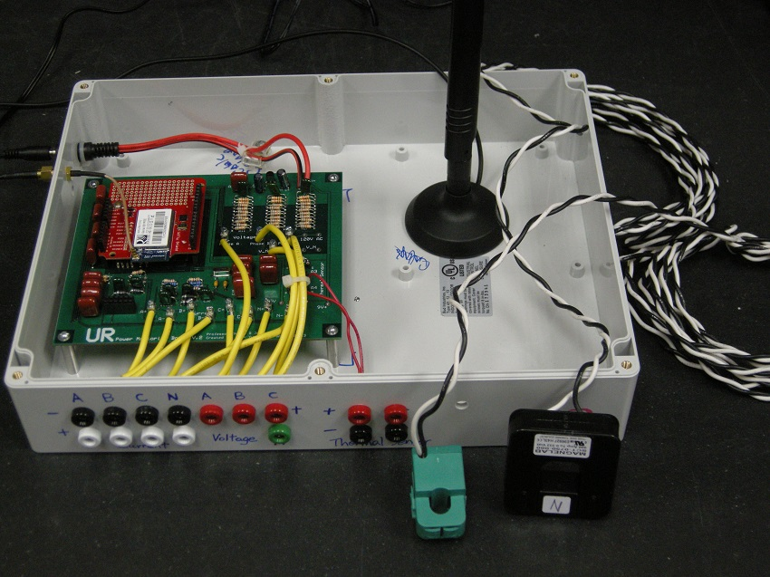

The present system uses a MAXIM Q3183 power meter chip, an Arduino microprocessor board, and a WiFly shield.
To monitor a three-phase circuit, four current transformers are used for the A, B, and C phases and the neutral wire, and three voltage connections are required. The MAXIM chip measures and computes the usual power quantities, including power factor, real and reactive power, volt-amps, plus voltage and current harmonics up to the 21st.
With the chip configured to measure and transmit the power quantities and first 5 harmonics, the time required per data cycle is approximately 30 seconds. Data is uploaded to a server via the University's wireless network. The data is accessible using any modern browser. Data can be viewed on-line or data collection can be scheduled for later downloading and analysis.
Two monitors are operational at present, one in the Hopeman Engineering Builing and another in the University's COGEN plant where it monitors the output of a steam-driven, 15 MWe synchronous alternator.

Students
Lucas Crandall (2014)
Ka Fung (2013)
Pak Lam Yung (2013)
Will Kung (2014)
James Meyers (2013)
Eddie Samuels (2015)
Pak Lam Yung (2013)
Staff
John Simonson
programming assistance
Scott Attili & John Nastasi
device installation
Doug Bentley
network assistance
Paul Osborne
mechanical assembly
Goals
System re-design: using one DC supply level & scavenges power from monitored circuit irrespective of AC voltage level
System re-design: higher speed operation when measuring harmonics
Create a secure system that can be used to monitor a 3-phase circuit anywhere on campus
Implement a system using the cloud for data storage